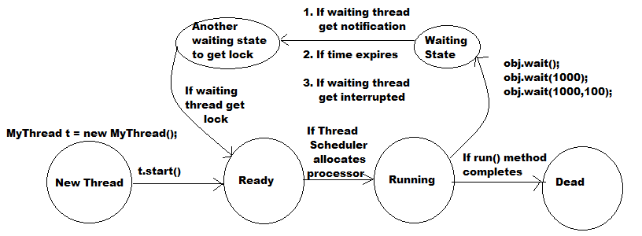

Interthread Communication:
- Two threads can communicate with each other by using wait(), notify() and notifyAll() methods .
- The thread which required updation it has to call wait() method and immediately it will entered into waiting state .
- The thread which provides updation is responsible to call notify() method . So that waiting thread will get that notification and it continue its execution with those updations .
- wait(), notify() and notifyAll() methods present in Object class, but not Thread class because Thread can call these methods on any java object .
- To call wait(), notify() and notifyAll() methods compulsory the current thread should be owner of that object i.e compulsory the current thread should has lock of that object . i.e compulsory the current thread should inside synchronized area .
- Hence we can call wait(),notify() and notifyAll() methods only from synchronized area otherwise we will get RuntimeException saying : IllegalMonitorStateException .
- Once a thread call wait() method on any object it immediately releases the lock of that object and entered into waiting state .(But not all locks)
- Once a thread calls notify() method on any object it releases lock of that object but may not immediately .
- Except wait(), notify() and notifyAll() methods thread won't releases the lock anywhere else .

Difference between notify() and notifyAll():
- We can use notify() method to give the notification for only one waiting thread . If several threads are waiting then only one thread will be notified and all remaining threads will wait for future notifications, but which thread will be notified we can not expect it depends on JVM .
- We can use notifyAll() method to give the notification for all waiting threads of a particular object, eventhough all waiting threads got notified, but execution will happen one by one because they required lock .